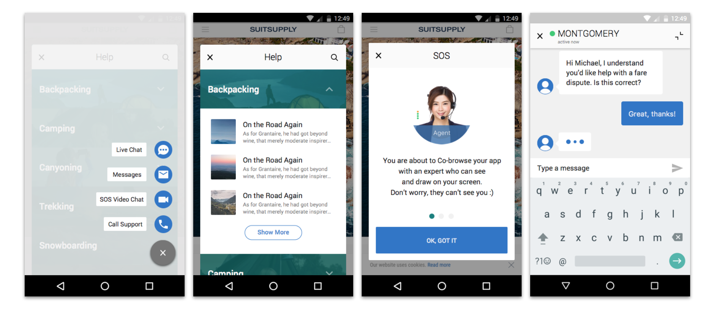
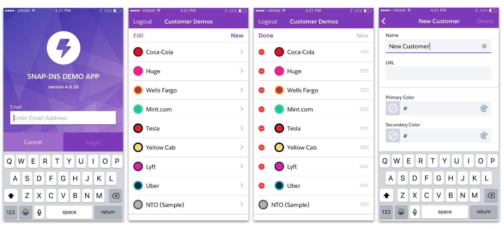
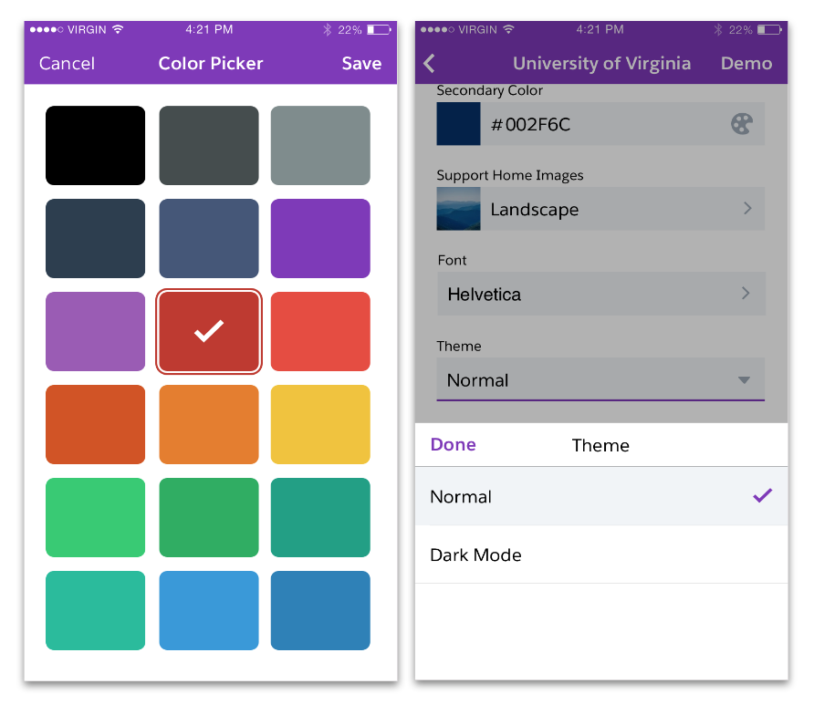
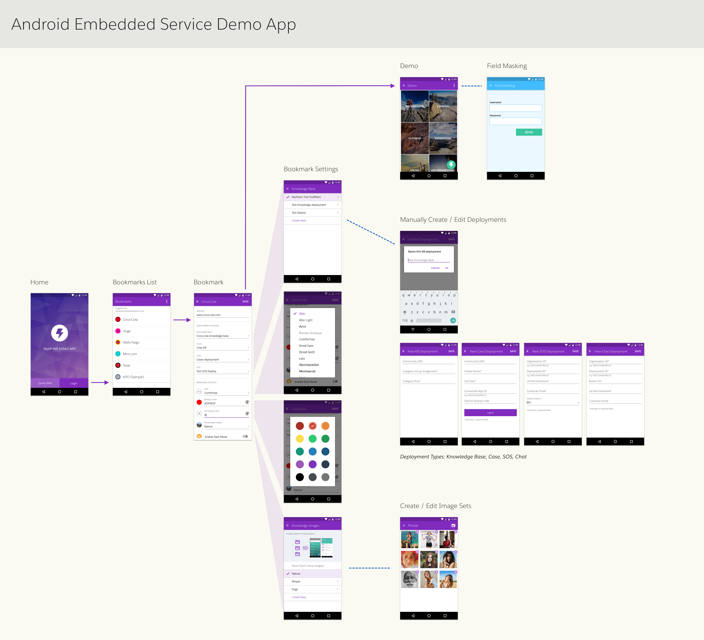

ABOUT SNAP-INS
Salesforce Service Cloud Lightning Snap-Ins is a product that helps companies provide better customer service through their own websites and native mobile apps (both Android and iOS). Snap-Ins provides communication through chat, cases, video chat, and articles. The product is completey configurable to match the customer’s brand.
When I started at Salesforce, one of my early projects was to create a demo app to showcase Snap-Ins. I was the lead designer of a previous effort to translate the existing iOS designs for Snap-Ins onto the Android platform, so I was already very familiar with the Snap-Ins product. Below are some images showing how Snap-Ins communication channels might appear on an Android app for a green- and blue-branded company that sells camping gear.
Android Native Snap-Ins - an SDK that Provides Articles, Chat, Video, and Cases
PROBLEM
Solution engineers (SEs) are people at Salesforce who help our customers get the most out of Salesforce products, tailored to their specific needs. SEs needed a way to communicate that value of Snap-Ins to customers via a demo app. I was tasked with creating internal apps on both iOS and Android that the SEs could use to run demos.
RESEARCH
I started my project by conducting interviews with stakeholders and SEs to better understand their specific needs. I learned that SEs wanted a way to make the demo app look and feel as much like the customer’s real app as possible, and that they needed to be able to run the demo quickly, sometimes with very little notice.
DESIGNS
I suggested creating “Bookmarks” to keep track of different settings for different companies. The screens below show steps to setup bookmarks for hypothetical customers. Bookmarks contain specific brand and configuration settings per customer.
iOS Demo App with Customized Bookmarks
The Demo App Allows SEs to Show-off the Brandability of Snap-Ins
Proposed Android Demo App Flow
Flinto Prototype of iOS Demo App
REFLECTIONS
I really enjoyed working on this project because I had direct access to my end users, which made research much easier, both for intial discovery calls and for feedback on designs. I also had a small, dedicated team working on just this app for a short time, which helped us move fast even with few resources.
We ran into a constraint in which it was not possible to implement the same designs on both Android and iOS for technical reasons. As a result, I had to quickly revise the designs for the Android app. This experience helped me understand the importance of always being closely aligned with developers to ensure that designs are not only great UX, but also feasible to build.